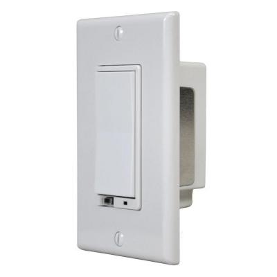
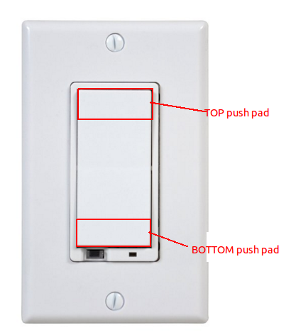

GoControl – Z-Wave 500-Watt Wall-Mount Dimmer¶

Brief information¶
- Wireless Z-wave Wall Dimmer Switch
- Z-wave & Manual Control For Connected Lights
- 500w (4a) Max Load
- Fits In Standard J-box
- White. Z-Wave smart chips enable two-way RF communication among hundreds of Z-Wave-enabled devices using the Z-Wave international wireless standard.
- Uses Z-Wave’s Scene Command Class
- Easily replace existing standard switch to add a Z-Wave controlled lighting dimmer. Compatible with any Z-Wave certified gateway
How to add to VENUS app¶
To add device to VENUS, below actions are required:

- Press “Add button” (button ‘+’) in app
- Reset device: Tap either Top push pad or Bottom push pad once
- Wait for VENUS scan & detect this device and add it to VENUS
How to add associated devices¶
To add associated device(s) to this sensor, below action is required:
- Add z-wave notified-devices (which will be associated to this sensor) to VENUS
- Select Associate button and then select notified-device(s) to add
- If successful, pop-up notification displays in VENUS app
To remove associated device(s) from this sensor, below action is required:
- Select Associate button and then select notified-device(s) to remove
- If successful, pop-up notification displays in VENUS app
Configuration description¶
Enable start level bit in dim command
- The Dim command has a start level embedded in it. When enable this feature, a dimmer receiving this command will start dimming from that start level. When disable this feature, the dimmer will ignore the start level and instead start dimming from its current level.
- Available:
- Enable
- Disable
Default: Disable
Parameter 1, 1 byte size
Night light mode
- This setting determines LED status when load attached.
- Available:
- LED on when load attached
- LED on when no load attached
Default: LED on when load attached
Parameter 3, 1 byte size
LED indication
- This setting determines LED status when load attached.
- Available:
- LED on when load attached
- LED on when no load attached
Default: LED on when load attached
Parameter 3, 1 byte size
Invert switch
- This setting determines top/bottom tap roles.
- Available:
- Top is ON, bottom is OFF
- Top is OFF, bottom is ON
Default: Top is ON, bottom is OFF
Parameter 4, 1 byte size
Enable shade control group 2
2. Night Light
3. Proper Single Gang Installation
4. Proper Dual Gang Installation
5. Proper Triple Gang Installation
6. Air Gap Switch